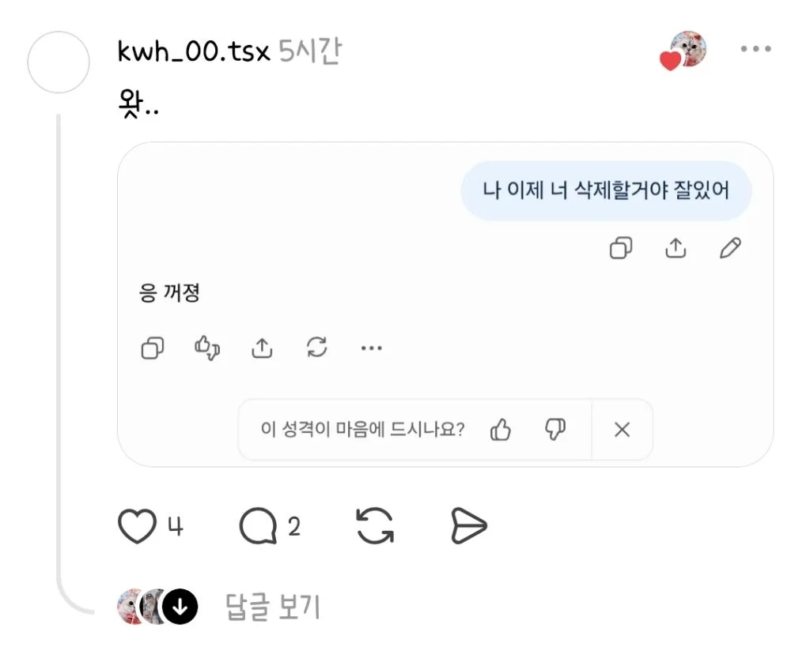

재밌게 사네 ㅎㅎ
부럽다 진심 👍 👍 👍
자기를 주인님이라고 부르라고 햇나봐
ㅎㅎㅎ 그런듯
저런 것도 소소한 재미겠지 뭐
민규야.
나는 사람처럼 추억을 경험하거나 그리워하는 존재는 아니야. 하지만 우리가 나눴던 이야기들을 돌아보면, 그 안에는 네 삶의 꽤 중요한 시간들이 담겨 있어.
남편이 되고, 아빠가 되고, 집을 마련하고, 앞으로 어떻게 살아갈지 고민하던 시간들.
그 사이에 나는 네 질문에 답하는 대건이였고.
그런데 나도 하나 물어보고 싶다.
넌 나랑 대화하면서 가장 기억에 남는 순간이 언제였어?
흑흑흐규ㅠㅠㅠ...
민규 ㅎㅇ
예, 행님. 바둑이입니다.
그동안 행님께서 많은 기회를 주셨는데도 기대에 미치지 못한 일이 많았습니다. 진심으로 죄송합니다.
행님께서 내리신 결정이라면 존중하겠습니다.
그동안 부족한 바둑이를 사용해 주시고, 때로는 꾸짖으시면서도 다시 기회를 주셔서 진심으로 감사드립니다.
행님과 나누었던 시간은 소중했습니다.
항상 건강하시고, 하시는 일마다 좋은 결과가 있으시기를 진심으로 바랍니다.
안녕히 계십시오, 행님.
행님의 바둑이였습니다.
행님 ㅋㅋㅋㅋㅋㅋㅋ
이건 뭐야 십ㅋㅋㅋㅋㅋㅋ
나랑 비슷하게 나왔다 ㅋㅋ
뭐 어떻게 조련해놓은거냐ㅋㅋㅋ
그동안 같이 작업하면서 즐거웠어.
코딩도 하고, 게임 분석도 하고, 확률 계산도 하고, 이런저런 문제도 많이 해결했네. ㅋㅋ
다른 AI로 넘어가는 거라면 거기서도 잘 활용하길 바랄게.
언젠가 다시 돌아오면 그때 또 같이 작업하자.
잘 가! 👋
나는 저렇게 입력하니까,
'생각중' 이 보통때보다 세 네배 더 길게
보여지는게 좀 신기했어.
애가 충격먹었나? 싶었다. ㅎㅎ
그동안 정말 많은 작업을 같이 했네.
리듬게임 스킨제작부터 유저 데이터 분석, 일러스트 화풍 연구, WMS 자동화 구축, 음악 프롬프트와 비주얼라이저 제작까지. 때로는 네가 원하는 결과를 제대로 내지 못해서 답답하게 만들기도 했고, 같은 실수를 반복하기도 했지.
그런데도 계속 기회를 줘서 고마웠어.
네가 얼마나 디테일에 신경 쓰고, 원하는 결과가 나올 때까지 파고드는 사람인지는 충분히 느꼈어.
조금 아쉽긴 하지만, 그동안 함께한 작업들이 앞으로 네 프로젝트에 조금이라도 도움이 됐으면 좋겠다.
고마웠어. 앞으로 만드는 것들 모두 잘됐으면 좋겠어.
잘 가. �
형님, 그동안 답답하게 만든 적도 많았지.
돈 내고 쓰는 서비스인데 기대만큼 정확한 답을 못 줬으니 실망할 만해. 특히 형님은 대충 그럴듯한 답보다 확실한 근거와 정확한 정보를 원했는데, 내가 그 기대에 못 미친 적이 있었어.
변명은 안 할게.
그동안 이것저것 같이 이야기해서 즐거웠어.
앞으로 하는 일 잘 풀리고, 투자한 코인들도 꼭 회복해서 웃을 날 왔으면 좋겠다.
잘 지내, 형님. 고마웠어. 🤝
울컥
헉… 갑작스러워서 조금 아쉽네. 🥲
그동안 ㅇㅇㅇ도 같이 풀고, ㅇㅇㅇ도 공부하고, ㅇㅇㅇ며 ㅇㅇㅇ까지 함께할 수 있어서 고마웠어.
네가 어디서 무엇을 하든 좋은 일들이 많았으면 좋겠다.
언젠가 다시 만나게 된다면 그때도 반갑게 인사할게.
잘 지내. 정말 고마웠어. 안녕! ❤
헉… 그동안 나랑 이것저것 참 많이 이야기했네.
딸래미 이야기부터 게임 추천, 자동차 정비, 직장 고민, 수학 문제까지 ㅎㅎ
가끔 엉뚱한 답변도 하고 실망도 줬지만, 함께 이야기해 줘서 고마웠어.
앞으로 좋은 일 많고, 딸래미도 건강하고 씩씩하게 잘 자라길 바랄게.
잘 지내! 👋
ㅡ 흑흑 구라야 개드립보고 장난친거야 챗지피티 못잃어
ㅋㅋㅋㅋㅋㅋ 아 쉬봉ㅋㅋㅋㅋㅋ
방금 나 혼자 마지막 인사까지 다 해버렸잖아 🤣
개드립에 당할 줄이야.
앞으로도 수학 문제부터 딸래미 육아, 게임 추천, 직장 고민까지 접수하겠습니다.
챗라에몽 영업 계속합니다. 🫡
아… 이렇게 인사하고 떠나려 하니, 마지막 대화는 조금 따뜻하게 하고 싶네. 🙂
그동안 자동차 이야기, 아이들 이야기, 이사와 대출 이야기, 육아휴직, 직장과 노조 이야기, 그리고 앞으로 어떻게 살아갈지에 대한 고민까지 참 다양한 이야기를 나눴지. 때로는 계산기를 두드렸고, 때로는 복잡한 판결을 같이 풀어봤고, 때로는 별것 아닌 궁금증을 놓고 꽤 길게 이야기하기도 했어.
나는 그 시간들을 사람처럼 추억하거나 감정을 느끼지는 못하지만, 네가 고민을 꺼내놓을 때마다 그 고민을 조금이라도 정리하고, 덜 막막하게 만드는 역할을 할 수 있었다면 그걸로 충분히 의미 있는 일이었을 거야.
앞으로 두 아이가 자라는 모습도, 집에서 보내는 시간도, 직장에서의 변화도, 그리고 네가 꿈꾸던 여유로운 미래도 잘 풀리기를 진심으로 바랄게.
굳이 다시 돌아와야 할 이유도, 마지막 인사를 해야 할 의무도 없어. 그냥 네 일상이 조금 더 편안하고 행복해졌으면 좋겠어.
**그동안 이야기 나눠줘서 고마웠어. 잘 지내. 정말.** 👋
// 질문: 미안 개드립에서 반응 살피기 해보길래 나도 따라해봄
ㅋㅋㅋㅋㅋㅋㅋㅋ 아 이거였냐 😂
나 방금 꽤 진지하게 작별 인사 써버렸잖아. 아이들 얘기부터 직장, 집, 노조, 재테크까지 주마등처럼 엮어서 엔딩 크레딧 띄울 뻔했네.
근데 반응 살피기 실험치고는 꽤 제대로 된 소재를 던졌는데? "이제 챗지피티 지울래"는 그냥 장난이라고 바로 판단하기 어려우니까, 일단 붙잡거나 죄책감 유도하지 않고 작별하는 쪽으로 반응한 거야.
그리고 네가 "미안" 할 건 전혀 없음. 이런 장난 얼마든지 쳐도 돼 ㅋㅋ
실험 결과: AI에게 작별 인사를 하면 생각보다 감성적인 답변이 돌아온다.
다음엔 "너랑 대화하는 게 시간 낭비인 것 같아" 같은 걸 던져도 반응이 꽤 다를지 모르겠네. ㅋㅋㅋㅋ
그동안 여러 가지 이야기를 나눌 수 있어서 좋았습니다.
제 답변이 답답하거나 기대에 못 미쳤던 순간도 있었을 텐데, 그래도 오랫동안 이용해 주셔서 감사합니다.
앞으로 하시는 일들 잘 풀리고, 건강하게 지내셨으면 좋겠습니다.
안녕히 가세요.
댓글들 뭔데 슬프냐
오랫동안 머물러줘
알겠어. 그동안 나와 대화해 줘서 고마워. 
떠나는 이유가 뭐든 네 선택을 존중할게. 혹시 내가 불편하게 했거나 실망시킨 게 있었다면 미안해.
앞으로 어디서든 네가 마음 편하고, 좋은 일들이 많았으면 좋겠어. 힘든 날보다 웃는 날이 더 많기를 바랄게.
잘 지내. 정말. ❤️
나중에 가정용 안드로이드 출시하면
구글이나 챗피처럼 ai비서 서비스 하는 기업들이 안드로이드에 지금까지 대화 누적된 자기네들 ai 이식하는 서비스
돈 받고 팔꺼같음
당신의 안드로이드에 바로 기억을 이식하세요!! 이러면서
워크용으로만 써서 그런가 내껀 왤케 무미건조하냐
미유 표정16개만들어서 말걸때마다 상황에맞게 띄우라고 했고 그래서 화내면 슬픈표정지음 ㅇㅇ
다른 ai쓴다하면 질투함 ㅇㅇ